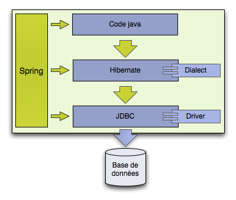
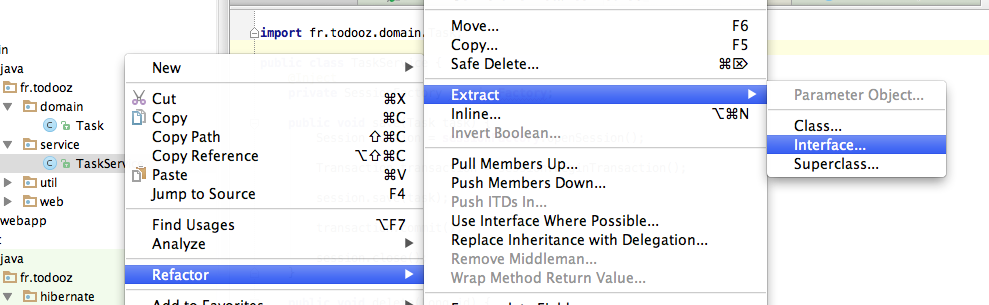
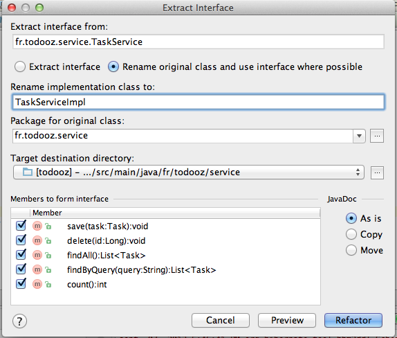

Spring
Spring
Introduction
Spring est un framework facilitant la création d'applications d'entreprise (jee).
Nous avons déjà vu la partie MVC de spring, nous allons mantenant en voir plus.
Spring est un conteneur dans le conteneur jee.
Les composants spring sont appelés beans.
L'injection de dépendances
Les relations entre les composants sont appelées dépendances.
Dans les applications, cela peut devenir rapidement complexe.

Spring prend en charge cette gestion des dépendances.
Il nous reste donc à nous concentrer sur l'écriture des composants.
Dépendances
Avant de commencer, nous allons rajouter les jars nécessaires à spring dans le pom.xml.
<dependency> <groupId>org.springframework</groupId> <artifactId>spring-core</artifactId> <version>3.2.4.RELEASE</version> <scope>compile</scope> </dependency> <dependency> <groupId>org.springframework</groupId> <artifactId>spring-beans</artifactId> <version>3.2.4.RELEASE</version> <scope>compile</scope> </dependency> <dependency> <groupId>org.springframework</groupId> <artifactId>spring-context</artifactId> <version>3.2.4.RELEASE</version> <scope>compile</scope> </dependency> <dependency> <groupId>org.springframework</groupId> <artifactId>spring-orm</artifactId> <version>3.2.4.RELEASE</version> <scope>compile</scope> </dependency> <dependency> <groupId>org.springframework</groupId> <artifactId>spring-test</artifactId> <version>3.2.4.RELEASE</version> <scope>test</scope> </dependency> <dependency> <groupId>javax.inject</groupId> <artifactId>javax.inject</artifactId> <version>1</version> </dependency>
Une partie de ces dépendances venaient déjà avec spring-mvc.
Mise en place du contexte spring
Nous mettons en place un contexte spring : c'est la définition l'ensemble des composants gérés par spring.
Comme d'habitude, nous commencons par les tests.
La première étape consiste à définir un fichier TaskServiceTest-context.xml dans le package fr.todooz.service dans le répertoire source des tests.
<?xml version="1.0" encoding="UTF-8"?> <beans xmlns="http://www.springframework.org/schema/beans" xmlns:xsi="http://www.w3.org/2001/XMLSchema-instance" xsi:schemaLocation=" http://www.springframework.org/schema/beans http://www.springframework.org/schema/beans/spring-beans-3.0.xsd" > </beans>
Ce fichier est un context spring vide pour les tests de TaskServiceTest.
C'est dans ce fichier que seront définis les beans pour les tests.
Afin que les fichiers xml dans src/test/java fassent partie du build, nous ajoutons la configuration suivante dans le pom (voir configuration des resources) :
<build>
<testResources>
<testResource>
<directory>${basedir}/src/test/java</directory>
<includes>
<include>**/*.xml</include>
</includes>
</testResource>
</testResources>
...
</build>
Et dans le test unitaire TaskServiceTest, on rajoute les annotations suivantes :
@RunWith(SpringJUnit4ClassRunner.class)
@ContextConfiguration
public class TaskServiceTest {
...
}
L'annotation @RunWith indique à JUnit que les tests tournent avec le plugin SpringJUnit4ClassRunner.
L'annotation @ContextConfiguration active le chargement du contexte spring.
Si on relance les tests, on voit que le contexte spring est chargé mais cela ne perturbe pas son exécution.
AnnotationSessionFactoryBean
La première chose que nous allons faire est de définir notre SessionFactory comme composant.
Dans TaskServiceTest-context.xml on ajoute.
<?xml version="1.0" encoding="UTF-8"?>
<beans xmlns="http://www.springframework.org/schema/beans" xmlns:xsi="http://www.w3.org/2001/XMLSchema-instance"
xsi:schemaLocation="
http://www.springframework.org/schema/beans
http://www.springframework.org/schema/beans/spring-beans-3.0.xsd" >
<!-- factory bean pour la SessionFactory hibernate -->
<bean id="sessionFactory" class="org.springframework.orm.hibernate4.LocalSessionFactoryBean">
<property name="hibernateProperties">
<bean class="org.springframework.beans.factory.config.PropertiesFactoryBean">
<property name="properties">
<props>
<prop key="hibernate.dialect">org.hibernate.dialect.DerbyTenFiveDialect</prop>
<prop key="hibernate.connection.url">jdbc:derby:target/testdb;create=true</prop>
<prop key="hibernate.connection.driver_class">org.apache.derby.jdbc.EmbeddedDriver</prop>
<prop key="hibernate.hbm2ddl.auto">create-drop</prop>
</props>
</property>
</bean>
</property>
<property name="packagesToScan" value="fr.todooz.domain"/>
</bean>
</beans>
C'est une configuration équivalente à ce que nous avions dans notre méthode createSessionFactory().
Nous pouvons donc supprimer cette méthode.
@Before public void createSessionFactory() { Configuration configuration = new Configuration(); configuration.setProperty("hibernate.dialect", "org.hibernate.dialect.DerbyDialect"); configuration.setProperty("hibernate.connection.url", "jdbc:derby:target/testdb;create=true"); configuration.setProperty("hibernate.connection.driver_class", "org.apache.derby.jdbc.EmbeddedDriver"); configuration.setProperty("hibernate.hbm2ddl.auto", "create-drop"); configuration.addAnnotatedClass(Task.class); ServiceRegistry serviceRegistry = new ServiceRegistryBuilder() .applySettings(configuration.getProperties()).buildServiceRegistry(); sessionFactory = configuration.buildSessionFactory(serviceRegistry); }
En échange, on injecte la session factory définie dans notre contexte de notre test.
@Inject private SessionFactory sessionFactory;
L'annotation @Inject permet de demander à spring d'injecter une dépendance dans notre composant.
C'est l'activité de base du wiring : injecter les dépendances.
Et nous n'avons plus besoin de fermer la SessionFactory nous même.
@After
public void cleanDb() {
Session session = sessionFactory.openSession();
Transaction transaction = session.beginTransaction();
session.createQuery("delete from Task").executeUpdate();
transaction.commit();
session.close();
sessionFactory.close();
}
Du code java contre du xml, pour le moment nous n'avons pas encore gagné grand chose.
Cependant, nous avons désormais clairement identifié le composant sessionFactory.
Les tests unitaires devraient encore passer.
TaskService v1.1
Ensuite on ajoute notre service dans le contexte spring.
<bean class="fr.todooz.service.TaskService" />
Au démarrage du contexte spring, une instance de la classe TaskService sera donc instanciée.
Nous avons une SessionFactory et un TaskService dans le contexte spring.
Il est donc possible d'inject la SessionFactory dans le TaskService.
@Inject private SessionFactory sessionFactory;public void setSessionFactory(SessionFactory sessionFactory) { this.sessionFactory = sessionFactory; }
Et dans le test unitaire, plus besoin d'instancier notre service nous même. On échange donc tous nos :
TaskService taskService = new TaskService(); taskService.setSessionFactory(sessionFactory);
contre un seul
@Inject private TaskService taskService;
Les tests passent encore, on commencer a gagner en lignes de code.
TaskService v2.0
Nous allons maintenant nous éviter de gérer les sessions et les transactions nous même.
En premier, nous devons extraire une interface à partir de notre service.
C'est une contrainte lié au langage java qui ne peut générer des proxies qu'a partir d'une interface.
Heureusement, intellij va nous aider un peu.
On fait un extract interface de la classe TaskService (clic droit sur la classe).
Et voici les options du refactoring.
Il faut sélectionner les 5 méthodes et choisir "Rename original class and use interface where possible".
Intellij a changé la définition du bean à instancier dans le contexte.
<bean class="fr.todooz.service.TaskServiceImpl" />
En effet TaskService est maintenant une interface, donc on ne peut pas l'instancier.
Une interface plus tard, les tests passent toujours.
Maintenant on ajoute une annotation @Transactional sur les 5 méthodes de l'implémentation et on peut retirer toute la gestion des sessions et transactions.
Par exemple, la méthode save devient :
@Override
@Transactional
public void save(Task task) {
Session session = sessionFactory.getCurrentSession();
session.save(task);
}
Faites de même avec les autres méthodes.
Cela simplifie grandement nos méthodes, nous libérant ainsi d'une partie répétitive et sujette à bugs.
Pour que les tests unitaires passent il faut quand même changer un peu la configuration (extraire une dataSource et ajouter le gestionnaire de transactions).
<!-- pool de connexion -->
<bean id="dataSource" class="org.apache.commons.dbcp.BasicDataSource" destroy-method="close">
<property name="driverClassName" value="org.apache.derby.jdbc.EmbeddedDriver"/>
<property name="url" value="jdbc:derby:target/testdb;create=true"/>
<property name="username" value=""/>
<property name="password" value=""/>
</bean>
<!-- factory bean pour la SessionFactory hibernate -->
<bean id="sessionFactory" class="org.springframework.orm.hibernate4.LocalSessionFactoryBean">
<property name="dataSource" ref="dataSource" />
<property name="hibernateProperties">
<bean class="org.springframework.beans.factory.config.PropertiesFactoryBean">
<property name="properties">
<props>
<prop key="hibernate.dialect">org.hibernate.dialect.DerbyTenFiveDialect</prop>
<prop key="hibernate.hbm2ddl.auto">create-drop</prop>
</props>
</property>
</bean>
</property>
<property name="packagesToScan" value="fr.todooz.domain"/>
</bean>
<!-- ajoute un gestionnaire de transactions lié à la sessionFactory -->
<bean id="transactionManager" class="org.springframework.orm.hibernate4.HibernateTransactionManager">
<property name="sessionFactory" ref="sessionFactory"/>
</bean>
<!-- active le support des annotations @Transactional -->
<tx:annotation-driven transaction-manager="transactionManager"/>
Et ajouter la dépendance :
<dependency>
<groupId>commons-dbcp</groupId>
<artifactId>commons-dbcp</artifactId>
<version>1.4</version>
<scope>compile</scope>
</dependency>
C'est maintenant le contexte spring qui va gérer :
- L'ouverture et la fermeture des session (pas de connection leak)
- Les transactions SQL
Si tout va bien, les test passent toujours.
La mise en place de la configuration spring peut sembler un peu lourde par rapport au gain en lignes de code mais :
- la configuration est factorisée et le gain va donc croissant avec l'augmentation du nombre de composants.
- Nos services sont "injectables" facilement afin de construire notre application.
- Le code ne conserve que la partie à forte valeur ajoutée.
- Notre code est maintenant transactionnel et peut participer simplement à des transactions englobants plusieurs service en même temps.
- La démarcation des transactions est déclarative et tout la gestion des ressources est prise en charge.
- Les appels à notre service dans le test sont les mêmes que les appels qui auront lieu en production.
readOnly = true
Il existe une petite optimisation possible lors de l'utilisation des annotations @Transactional.
En effet, si la relation avec la base se fait en lecture seule, alors il vaut mieux l'indiquer via la notation :
@Transactional(readOnly = true)
Cela indique à spring (et donc aussi à hibernate) qu'il n'y aura pas d'écriture en base à la fin des opérations sql. Certaines vérifications n'auront donc pas à être appliquées et donc on gagnera un peu en performance.
Sémantiquement, on indique clairement que notre méthode ne fait que lire en base.
Si on tente de marquer une méthode comme étant en read only alors que ce n'est pas le cas, on obtient une erreur.
Caused by: ERROR 25502: An SQL data change is not permitted for a read-only connection, user or database.
TagCloudService
Maintenant que coder un service est devenu plus simple, nous allons en coder un second : le TagCloudService
Voici l'interface TagCloudService à placer dans le package fr.todooz.service :
public interface TagCloudService {
public TagCloud buildTagCloud();
}
Le but est donc de réaliser la classe TagCloudServiceImpl qui implémente se service.
Voici les tests possibles afin de guider l'écriture du service.
@RunWith(SpringJUnit4ClassRunner.class)
@ContextConfiguration
public class TagCloudServiceTest {
@Inject
private SessionFactory sessionFactory;
@Inject
private TagCloudService tagCloudService;
@After
public void cleanDb() {
Session session = sessionFactory.openSession();
Transaction transaction = session.beginTransaction();
session.createQuery("delete from Task").executeUpdate();
transaction.commit();
session.close();
}
@Test
public void buildEmptyTagCloud() {
TagCloud tagCloud = tagCloudService.buildTagCloud();
Assert.assertEquals(0, tagCloud.size());
}
@Test
public void buildTagCloud() {
saveSomeTasks();
TagCloud tagCloud = tagCloudService.buildTagCloud();
Assert.assertEquals(5, tagCloud.size());
Assert.assertTrue(tagCloud.contains("java"));
Assert.assertTrue(tagCloud.contains("python"));
Assert.assertTrue(tagCloud.contains("nodejs"));
}
private void saveSomeTasks() {
Session session = sessionFactory.openSession();
Transaction transaction = session.beginTransaction();
session.save(buildTask("java,cobol"));
session.save(buildTask("java,python"));
session.save(buildTask("ruby,python"));
session.save(buildTask("nodejs"));
transaction.commit();
session.close();
}
private Task buildTask(String tags) {
Task task = new Task();
task.setDate(new Date());
task.setTitle("Read Effective Java");
task.setText("Read Effective Java before it's too late");
task.setTags(tags);
return task;
}
}
Définissez le contexte spring et codez la classe TagCloudServiceImpl afin que ces tests passent.
Voici quelques indices :
- TagCloudServiceImpl doit implémenter TagCloudService.
- Le service doit aller chercher tous les tags en base.
- Il est possible de faire un import d'un contexte dans un autre via un tag xml, par ex :
<import resource="test-context.xml" /> - Utiliser la méthode org.apache.commons.lang.StringUtils.split afin de découper un String en un tableau de String.